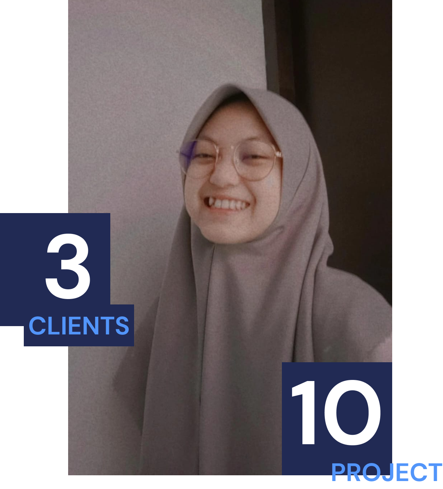

UI/UX Designer
Aprilia Dwi Crisyana
Hallo, Saya lahir di Malang, 2 April 2004. Saat ini saya berusia 18 tahun.
Hobi saya melukis dan membaca. Saya adalah penggemar berat penulis Tere Liye.
Saya menjalani pendidikan di Politeknik Elektronika Negeri Surabaya
dan mengambil jurusanTeknik Informatika.
Saat ini saya fokus mengembangkan diri pada bidang UI/UX Design.
Untuk mengembangkan diri, saya bekerja Freelance di perusahaan startup bernama Slash Studio pada divisi UI/UX Design.